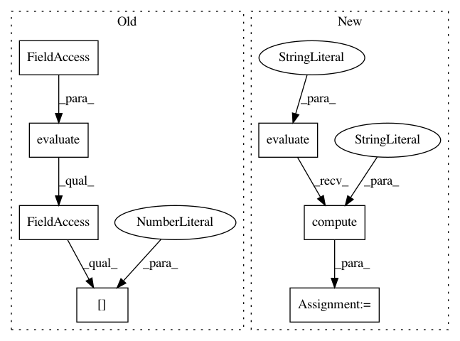

9049298ad2130c2271df32fdbd51841e0351aae6,tests/learning/test_evaluators.py,TestMentionLevelEvaluator,test_exact_strictness,#TestMentionLevelEvaluator#,56
Before Change
def test_exact_strictness(self):
evaluator = MentionLevelEvaluator(strictness="exact")
evaluation = (evaluator.evaluate(self.dataset)).l[0]
self.assertEqual(evaluation.tp, 3) // the 3 exact matches
self.assertEqual(evaluation.fp, 4) // the 3 overlapping + 1 spurious
self.assertEqual(evaluation.fn, 5) // the 3 overlapping + 2 missing
After Change
def test_exact_strictness(self):
evaluator = MentionLevelEvaluator()
evaluation = (evaluator.evaluate(self.dataset))("TOTAL")
self.assertEqual(evaluation.tp, 3) // the 3 exact matches
self.assertEqual(evaluation.fp, 4) // the 3 overlapping + 1 spurious
self.assertEqual(evaluation.fn, 5) // the 3 overlapping + 2 missing
ret = evaluation.compute("exact")
self.assertEqual(ret.precision, 3 / 7)
self.assertEqual(ret.recall, 3 / 8)
self.assertEqual(ret.f_measure, 2 * (3 / 7 * 3 / 8) / (3 / 7 + 3 / 8))
In pattern: SUPERPATTERN
Frequency: 3
Non-data size: 7
Instances
Project Name: Rostlab/nalaf
Commit Name: 9049298ad2130c2271df32fdbd51841e0351aae6
Time: 2016-03-30
Author: i@juanmi.rocks
File Name: tests/learning/test_evaluators.py
Class Name: TestMentionLevelEvaluator
Method Name: test_exact_strictness
Project Name: Rostlab/nalaf
Commit Name: 9049298ad2130c2271df32fdbd51841e0351aae6
Time: 2016-03-30
Author: i@juanmi.rocks
File Name: tests/learning/test_evaluators.py
Class Name: TestMentionLevelEvaluator
Method Name: test_half_overlapping_strictness
Project Name: Rostlab/nalaf
Commit Name: 9049298ad2130c2271df32fdbd51841e0351aae6
Time: 2016-03-30
Author: i@juanmi.rocks
File Name: tests/learning/test_evaluators.py
Class Name: TestMentionLevelEvaluator
Method Name: test_overlapping_strictness